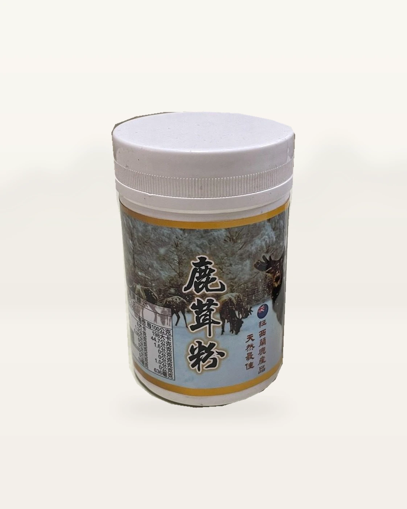

規格
75g／罐

商品圖片經去背、光線及情境背景處理，因拍攝角度與螢幕顯示可能略有差異；實際外觀、尺寸、包裝及標示請以收到的實品為準。
商品包裝
商品圖片僅展示實際完整密封罐及原始標籤；不展示開罐、倒粉、散粉或粉匙內容物。
包裝實物
以原罐實物照片呈現，未開罐、不展示粉末。

產品完整介紹
75g／罐
粉末
本產品為預先製作備貨商品；訂單資料與付款方式確認後，依現貨狀況安排出貨，物流配送時間另計。
價格與優惠請透過官方 LINE 詢問。
日常情境
可依個人習慣取適量，搭配溫開水、溫牛奶或溫豆漿攪拌均勻；第一次可先從少量開始。
看調飲方式